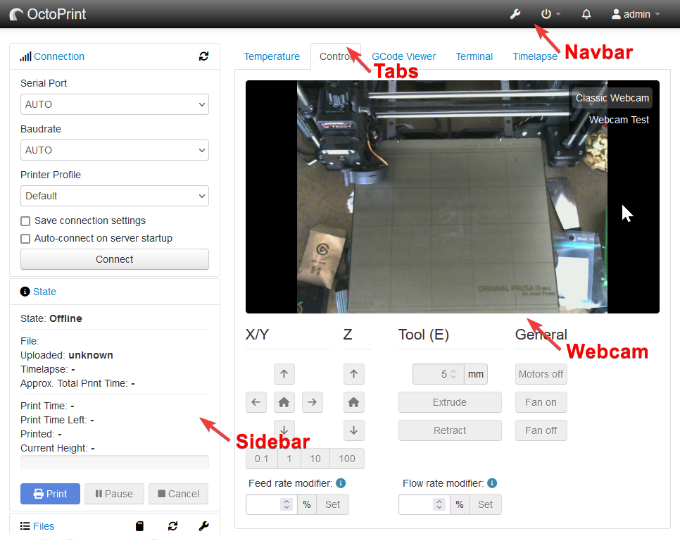

Plugin mixins are the heart of OctoPrint’s plugin system. They are special base classes
which are to be subclassed and extended to add functionality to OctoPrint. Plugins declare their instances that
implement one or multiple mixins using the __plugin_implementation__ control property. OctoPrint’s plugin core
collects those from the plugins and offers methods to access them based on the mixin type, which get used at multiple
locations within OctoPrint.
Using mixins always follows the pattern of retrieving the matching implementations from the plugin subsystem, then
calling the specific mixin’s methods as defined and necessary.
The following snippet taken from OctoPrint’s code for example shows how all AssetPlugin
implementations are collected and then all assets they return via their get_assets methods are retrieved and
merged into one big asset map (differing between javascripts and stylesheets of various types) for use during
rendition of the UI.
If a method is to be called on a plugin implementation for which a sorting context is defined (see the mixin
documentation for information on this), OctoPrint’s plugin subsystem will ensure that the order in which the implementation
calls are done is as follows:
Plugins with a return value that is not None for get_sorting_key()
for the provided sorting context will be ordered among each other first. If the returned order number is equal for
two or more implementations, they will be sorted first by whether they come bundled with OctoPrint or not, then by
their identifier.
After that follow plugins which returned None (the default). They are first sorted by whether they come bundled
with OctoPrint or not, then by their identifier.
Example: Consider four plugin implementations implementing the StartupPlugin mixin, called
plugin_a, plugin_b, plugin_c and plugin_d, the latter coming bundled with OctoPrint. plugin_a
and plugin_d don’t override get_sorting_key().
plugin_b and plugin_c both return 1 for the sorting context StartupPlugin.on_startup, None otherwise:
importoctoprint.pluginclassPluginA(octoprint.plugin.StartupPlugin):defon_startup(self,*args,**kwargs):self._logger.info("PluginA starting up")defon_after_startup(self,*args,**kwargs):self._logger.info("PluginA started up")__plugin_implementation__=PluginA()
importoctoprint.pluginclassPluginB(octoprint.plugin.StartupPlugin):defget_sorting_key(self,context):ifcontext=="StartupPlugin.on_startup":return1returnNonedefon_startup(self,*args,**kwargs):self._logger.info("PluginB starting up")defon_after_startup(self,*args,**kwargs):self._logger.info("PluginB started up")__plugin_implementation__=PluginB()
importoctoprint.pluginclassPluginC(octoprint.plugin.StartupPlugin):defget_sorting_key(self,context):ifcontext=="StartupPlugin.on_startup":return1returnNonedefon_startup(self,*args,**kwargs):self._logger.info("PluginC starting up")defon_after_startup(self,*args,**kwargs):self._logger.info("PluginC started up")__plugin_implementation__=PluginC()
# in this example this is bundled with OctoPrintimportoctoprint.pluginclassPluginD(octoprint.plugin.StartupPlugin):defon_startup(self,*args,**kwargs):self._logger.info("PluginD starting up")defon_after_startup(self,*args,**kwargs):self._logger.info("PluginD started up")__plugin_implementation__=PluginD()
OctoPrint will detect that plugin_b and plugin_c define a order number, and since it’s identical for both (1)
will order both plugins based first on their bundling status and then on their plugin identifier.
plugin_a and plugin_d don’t define a sort key and hence will be
put after the other two, with plugin_d coming beforeplugin_a since it comes bundled with OctoPrint.
The execution order of the on_startup method will hence be plugin_b, plugin_c, plugin_d, plugin_a.
Now, the execution order of the on_after_startup method will be determined based on another sorting context,
StartupPlugin.on_after_startup for which all of the plugins return None. Hence, the execution order of the
on_after_startup method will be ordered first by bundle status, then by plugin identifier: plugin_d, plugin_a, plugin_b, plugin_c.
This will result in the following messages to be generated:
Plugin B starting up
Plugin C starting up
Plugin D starting up
Plugin A starting up
Plugin D started up
Plugin A started up
Plugin B started up
Plugin C started up
OctoPrint’s plugin subsystem will inject a bunch of properties into each mixin implementation.
An overview of these properties can be found in the section Injected Properties.
The AssetPlugin mixin allows plugins to define additional static assets such as JavaScript or CSS files to
be automatically embedded into the pages delivered by the server to be used within the client sided part of
the plugin.
A typical usage of the AssetPlugin functionality is to embed a custom view model to be used by templates injected
through a TemplatePlugin.
Defines the folder where the plugin stores its static assets as defined in get_assets(). Override this if
your plugin stores its assets at some other place than the static sub folder in the plugin base directory.
Defines the static assets the plugin offers. The following asset types are recognized and automatically
imported at the appropriate places to be available:
js
JavaScript files, such as additional view models
clientjs
JavaScript files containing additional parts for the JS Client Library (since 1.3.10)
css
CSS files with additional styles, will be embedded into delivered pages when not running in LESS mode.
less
LESS files with additional styles, will be embedded into delivered pages when running in LESS mode.
The expected format to be returned is a dictionary mapping one or more of these keys to a list of files of that
type, the files being represented as relative paths from the asset folder as defined via get_asset_folder().
Example:
The assets will be made available by OctoPrint under the URL /plugin/<pluginidentifier>/static/<path>, with
pluginidentifier being the plugin’s identifier and path being the path as defined in the asset dictionary.
Assets will be automatically bundled by OctoPrint using
Flask-Assets.
If not overridden, this will return a dictionary of all discovered assets following the format <type>/<identifier>.<ext> (since 1.11.0).
The BlueprintPlugin mixin allows plugins to define their own full fledged endpoints for whatever purpose,
be it a more sophisticated API than what is possible via the SimpleApiPlugin or a custom web frontend.
The mixin automatically creates a blueprint for you that will be registered under /plugin/<pluginidentifier>/.
All you need to do is decorate all of your view functions with the route() decorator,
which behaves exactly the same like Flask’s regular route decorators. Example:
importoctoprint.pluginimportflaskclassMyBlueprintPlugin(octoprint.plugin.BlueprintPlugin):@octoprint.plugin.BlueprintPlugin.route("/echo",methods=["GET"])defmyEcho(self):ifnot"text"inflask.request.values:abort(400,description="Expected a text to echo back.")returnflask.request.values["text"]__plugin_implementation__=MyBlueprintPlugin()
Your blueprint will be published by OctoPrint under the base URL /plugin/<pluginidentifier>/, so the above
example of a plugin with the identifier “myblueprintplugin” would be reachable under
/plugin/myblueprintplugin/echo.
Just like with regular blueprints you’ll be able to create URLs via url_for, just use the prefix
plugin.<pluginidentifier>.<method_name>, e.g.:
flask.url_for("plugin.myblueprintplugin.myEcho")# will return "/plugin/myblueprintplugin/echo"
Note
As of OctoPrint 1.12.0, endpoints provided through a BlueprintPlugin do now automatically fall under
OctoPrint’s CSRF protection. You can exempt certain endpoints from CSRF protection by decorating them with
@octoprint.plugin.BlueprintPlugin.csrf_exempt.
classMyPlugin(octoprint.plugin.BlueprintPlugin):@octoprint.plugin.BlueprintPlugin.route("/hello_world",methods=["GET"])defhello_world(self):# This is a GET request and thus not subject to CSRF protectionreturn"Hello world!"@octoprint.plugin.BlueprintPlugin.route("/hello_you",methods=["POST"])defhello_you(self):# This is a POST request and thus subject to CSRF protection. It is not exempt.return"Hello you!"@octoprint.plugin.BlueprintPlugin.route("/hello_me",methods=["POST"])@octoprint.plugin.BlueprintPlugin.csrf_exempt()defhello_me(self):# This is a POST request and thus subject to CSRF protection, but this one is exempt.return"Hello me!"defis_blueprint_csrf_protected(self):returnTrue
A decorator to mark a view method in your BlueprintPlugin as exempt from CSRF protection. This makes sense
if you offer an authenticated API for a certain workflow (see e.g. the bundled appkeys plugin) but in most
cases should not be needed.
A decorator to mark errorhandlings methods in your BlueprintPlugin subclass. Works just the same as Flask’s
own errorhandler decorator available on blueprints.
Return all prefixes of your endpoint that are an API that should be containing JSON only.
Anything that matches this will generate JSON error messages in case of flask.abort
calls, instead of the default HTML ones.
Defaults to all endpoints under the blueprint. Limit this further as needed. E.g.,
if you only want your endpoints /foo, /foo/1 and /bar to be declared as API,
return ["/foo","/bar"]. A match will be determined via startswith.
Override this if you want your blueprint constructed with additional options such as static_folder,
template_folder, etc.
Defaults to the blueprint’s static_folder and template_folder to be set to the plugin’s basefolder
plus /static or respectively /templates, or – if the plugin also implements AssetPlugin and/or
TemplatePlugin – the paths provided by get_asset_folder and get_template_folder respectively.
Whether a blueprint’s endpoints are CSRF protected. As of 1.12.0, this defaults to True
and thus enforces protection unless a plugin opts out by returning False here.
Whether a login session by a registered user is needed to access the blueprint’s endpoints. Requiring
a session is the default. Note that this only restricts access to the blueprint’s dynamic methods, static files
are always accessible.
If you want your blueprint’s endpoints to have specific permissions, return False for this and do your
permissions checks explicitly.
The EventHandlerPlugin mixin allows OctoPrint plugins to react to any of OctoPrint’s events.
OctoPrint will call the on_event() method for any event fired on its internal event bus, supplying the
event type and the associated payload. Please note that until your plugin returns from that method, further event
processing within OctoPrint will block - the event queue itself is run asynchronously from the rest of OctoPrint,
but the processing of the events within the queue itself happens consecutively.
This mixin is especially interesting for plugins which want to react on things like print jobs finishing, timelapse
videos rendering etc.
The MfaPlugin mixin allows plugins to provide multi-factor authentication (MFA) for OctoPrint.
This mixin is especially interesting for plugins which want to add additional security to OctoPrint, e.g. by requiring
a second factor for login.
The mixin implements TemplatePlugin to allow plugins to provide custom templates for the
MFA setup and verification process.
A reference implementation of an MFA plugin, implementing TOTP, can be found at github.com/OctoPrint/OctoPrint-MfaTotp.
Additionally there’s a dummy implementation used for testing as part of OctoPrint’s source code in the folder .github/fixtures/mfa_dummy.
Interested plugin developers are encouraged to take a look at both these implementation to get an idea of how to implement their own MFA plugin.
Including the SettingsPlugin mixin allows plugins to store and retrieve their own settings within OctoPrint’s
configuration.
Plugins including the mixin will get injected an additional property self._settings which is an instance of
PluginSettingsManager already properly initialized for use by the plugin. In order for the manager to
know about the available settings structure and default values upon initialization, implementing plugins will need
to provide a dictionary with the plugin’s default settings through overriding the method get_settings_defaults().
The defined structure will then be available to access through the settings manager available as self._settings.
Note
Use the settings only to store configuration data or information that is relevant to the UI. Anything in the settings
is part of the hash that is used to determine whether a client’s copy of the UI is still up to date or not. If you
store unrelated and possibly often changing information in the settings, you will force the client to reload the
UI without visible changes, which will lead to a bad user experience.
You may store additional data in your plugin’s data folder instead, which is not part of the hash and whose path
can be retrieved through get_plugin_data_folder(), e.g.:
If your plugin needs to react to the change of specific configuration values on the fly, e.g. to adjust the log level
of a logger when the user changes a corresponding flag via the settings dialog, you can override the
on_settings_save() method and wrap the call to the implementation from the parent class with retrieval of the
old and the new value and react accordingly.
Example:
importoctoprint.pluginclassMySettingsPlugin(octoprint.plugin.SettingsPlugin,octoprint.plugin.StartupPlugin):defget_settings_defaults(self):returndict(some_setting="foo",some_value=23,sub=dict(some_flag=True))defon_settings_save(self,data):old_flag=self._settings.get_boolean(["sub","some_flag"])octoprint.plugin.SettingsPlugin.on_settings_save(self,data)new_flag=self._settings.get_boolean(["sub","some_flag"])ifold_flag!=new_flag:self._logger.info("sub.some_flag changed from {old_flag} to {new_flag}".format(**locals()))defon_after_startup(self):some_setting=self._settings.get(["some_setting"])some_value=self._settings.get_int(["some_value"])some_flag=self._settings.get_boolean(["sub","some_flag"])self._logger.info("some_setting = {some_setting}, some_value = {some_value}, sub.some_flag = {some_flag}".format(**locals())__plugin_implementation__=MySettingsPlugin()
Of course, you are always free to completely override both on_settings_load() and on_settings_save() if the
default implementations do not fit your requirements.
Important
Make sure to protect sensitive information stored by your plugin that only users with specific permissions
should have access to via get_settings_restricted_paths(). OctoPrint will
return its settings on the REST API even to anonymous clients, but will filter out fields it knows are restricted,
therefore you must make sure that you specify sensitive information accordingly to limit access as required!
You should also protect any fields like server commands or endpoint URLs pinged by your plugin by enforcing a fresh
credential check and potential reauthentication. Since version 1.12.0 you can do this via
get_settings_reauth_requirements().
Retrieves the plugin’s preprocessors to use for preprocessing returned or set values prior to returning/setting
them.
The preprocessors should be provided as a dictionary mapping the path of the values to preprocess
(hierarchically) to a transform function which will get the value to transform as only input and should return
the transformed value.
Example:
defget_settings_defaults(self):returndict(some_key="Some_Value",some_other_key="Some_Value")defget_settings_preprocessors(self):returndict(some_key=lambdax:x.upper()),# getter preprocessorsdict(some_other_key=lambdax:x.lower())# setter preprocessorsdefsome_method(self):# getting the value for "some_key" should turn it to upper caseassertself._settings.get(["some_key"])=="SOME_VALUE"# the value for "some_other_key" should be left aloneassertself._settings.get(["some_other_key"]="Some_Value"# setting a value for "some_other_key" should cause the value to first be turned to lower caseself._settings.set(["some_other_key"],"SOME_OTHER_VALUE")assertself._settings.get(["some_other_key"])=="some_other_value"
Retrieves a config tree of settings that require a fresh credential check and potential
reauthentication before they can be saved via the REST API.
Override this in a plugin if you have any sensitive settings, e.g. system commands, that should
require a fresh credential check from the user to write.
Return a dict with the tree of affected keys. Example:
In this example, trying to write foo.a or any of bar.some, bar.other or bar.settings
will make OctoPrint check whether the credentials are still fresh, and if not abort the settings
save request, returning an 403 Forbidden.
Retrieves the list of paths in the plugin’s settings which be restricted on the REST API.
Override this in your plugin’s implementation to restrict whether a path should only be returned to users with
certain permissions, or never on the REST API.
Return a dict with one of the following keys, mapping to a list of paths (as tuples or lists of
the path elements) for which to restrict access via the REST API accordingly:
An OctoPrintPermission instance: Paths will only be available on the REST API for users with the permission
admin: Paths will only be available on the REST API for users with admin rights (any user with the SETTINGS permission)
user: Paths will only be available on the REST API when accessed as a logged in user
an int signifying the current settings format, should be incremented by plugins whenever there
are backwards incompatible changes. Returning None here disables the version tracking for the
plugin’s configuration.
Plugins may overwrite this method to perform additional clean up tasks.
The default implementation just minimizes the data persisted on disk to only contain
the differences to the defaults (in case the current data was persisted with an older
version of OctoPrint that still duplicated default data).
Loads the settings for the plugin, called by the Settings API view in order to retrieve all settings from
all plugins. Override this if you want to inject additional settings properties that are not stored within
OctoPrint’s configuration.
Note
The default implementation will return your plugin’s settings as is, so just in the structure and in the types
that are currently stored in OctoPrint’s configuration.
If you need more granular control here, e.g. over the used data types, you’ll need to override this method
and iterate yourself over all your settings, using the proper retriever methods on the settings manager
to retrieve the data in the correct format.
The default implementation will also replace any paths that have been restricted by your plugin through
get_settings_restricted_paths() with either the provided
default value (if one was provided), an empty dictionary (as fallback for restricted dictionaries), an
empty list (as fallback for restricted lists) or None values where necessary.
Make sure to do your own restriction if you decide to fully overload this method.
Called by OctoPrint if it detects that the installed version of the plugin necessitates a higher settings version
than the one currently stored in _config.yaml. Will also be called if the settings data stored in config.yaml
doesn’t have version information, in which case the current parameter will be None.
Your plugin’s implementation should take care of migrating any data by utilizing self._settings. OctoPrint
will take care of saving any changes to disk by calling self._settings.save() after returning from this method.
This method will be called before your plugin’s on_settings_initialized() method, with all injections already
having taken place. You can therefore depend on the configuration having been migrated by the time
on_settings_initialized() is called.
Saves the settings for the plugin, called by the Settings API view in order to persist all settings
from all plugins. Override this if you need to directly react to settings changes or want to extract
additional settings properties that are not stored within OctoPrint’s configuration.
Note
The default implementation will persist your plugin’s settings as is, so just in the structure and in the
types that were received by the Settings API view. Values identical to the default settings values
will not be persisted.
If you need more granular control here, e.g. over the used data types, you’ll need to override this method
and iterate yourself over all your settings, retrieving them (if set) from the supplied received data
and using the proper setter methods on the settings manager to persist the data in the correct format.
The ShutdownPlugin allows hooking into the shutdown of OctoPrint. It’s usually used in conjunction with the
StartupPlugin mixin, to cleanly shut down additional services again that where started by the StartupPlugin
part of the plugin.
Utilizing the SimpleApiPlugin mixin plugins may implement a simple API based around one GET resource and one
resource accepting JSON commands POSTed to it. This is the easy alternative for plugin’s which don’t need the
full power of a Flask Blueprint that the BlueprintPlugin
mixin offers.
Use this mixin if all you need to do is return some kind of dynamic data to your plugin from the backend
and/or want to react to simple commands which boil down to a type of command and a few flat parameters
supplied with it.
The simple API constructed by OctoPrint for you will be made available under /api/plugin/<pluginidentifier>/.
OctoPrint will do some preliminary request validation for your defined commands, making sure the request body is in
the correct format (content type must be JSON) and contains all obligatory parameters for your command.
Let’s take a look at a small example for such a simple API and how you would go about calling it.
Take this example of a plugin registered under plugin identifier mysimpleapiplugin:
importoctoprint.pluginimportflaskclassMySimpleApiPlugin(octoprint.plugin.SimpleApiPlugin):defget_api_commands(self):returndict(command1=[],command2=["some_parameter"])defon_api_command(self,command,data):importflaskifcommand=="command1":parameter="unset"if"parameter"indata:parameter="set"self._logger.info("command1 called, parameter is {parameter}".format(**locals()))elifcommand=="command2":self._logger.info("command2 called, some_parameter is {some_parameter}".format(**data))defon_api_get(self,request):returnflask.jsonify(foo="bar")__plugin_implementation__=MySimpleApiPlugin()
Our plugin defines two commands, command1 with no mandatory parameters and command2 with one
mandatory parameter some_parameter.
command1 can also accept an optional parameter parameter, and will log whether
that parameter was set or unset. command2 will log the content of the mandatory some_parameter parameter.
A valid POST request for command2 sent to /api/plugin/mysimpleapiplugin would look like this:
Whether a SimpleApi’s endpoints requires a valid user to be logged in to access it. For now, this defaults to False to leave it up to
plugins to decide whether the endpoints should be protected. Long term, this will default to True and hence
enforce protection unless a plugin opts out by returning False here.
If you do not override this method in your mixin implementation, a warning will be logged to the console
to alert you of the requirement to make a decision here and to not rely on the default implementation, due to the
forthcoming change in implemented default behaviour.
Be advised that by returning True here, OctoPrint will only check whether a valid user is logged in before forwarding
the request to your implementation. However, you really should add additional permission checks specific to your plugin into your API
endpoints.
Called by OctoPrint upon a POST request to /api/plugin/<pluginidentifier>. command will contain one of
the commands as specified via get_api_commands(), data will contain the full request body parsed
from JSON into a Python dictionary. Note that this will also contain the command attribute itself. For the
example given above, for the command2 request the data received by the plugin would be equal to
dict(command="command2",some_parameter="some_value").
If your plugin returns nothing here, OctoPrint will return an empty response with return code 204Nocontent
for you. You may also return regular responses as you would return from any Flask view here though, e.g.
returnflask.jsonify(result="somejsonresult") or flask.abort(404).
Called by OctoPrint upon a GET request to /api/plugin/<pluginidentifier>. request will contain the
received Flask request object which you may evaluate
for additional arguments supplied with the request.
If your plugin returns nothing here, OctoPrint will return an empty response with return code 204Nocontent
for you. You may also return regular responses as you would return from any Flask view here though, e.g.
returnflask.jsonify(result="somejsonresult") or flask.abort(404).
Called by OctoPrint to slice model_path for the indicated printer_profile. If the machinecode_path is None,
slicer implementations should generate it from the provided model_path.
If provided, the profile_path is guaranteed by OctoPrint to be a serialized slicing profile created through the slicing
plugin’s own save_slicer_profile() method.
If provided, position will be a dict containing and x and a y key, indicating the position
the center of the model on the print bed should have in the final sliced machine code. If not provided, slicer
implementations should place the model in the center of the print bed.
on_progress will be a callback which expects an additional keyword argument _progress with the current
slicing progress which - if progress reporting is supported - the slicing plugin should call like the following:
Please note that both on_progress_args and on_progress_kwargs as supplied by OctoPrint might be None,
so always make sure to initialize those values to sane defaults like depicted above before invoking the callback.
In order to support external cancellation of an ongoing slicing job via cancel_slicing(), implementations
should make sure to track the started jobs via the machinecode_path, if provided.
The method should return a 2-tuple consisting of a boolean flag indicating whether the slicing job was
finished successfully (True) or not (False) and a result depending on the success of the slicing job.
For jobs that finished successfully, result should be a dict containing additional information
about the slicing job under the following keys:
analysis
Analysis result of the generated machine code as returned by the slicer itself. This should match the
data structure described for the analysis queue of the matching machine code format, e.g.
GcodeAnalysisQueue for GCODE files.
For jobs that did not finish successfully (but not due to being cancelled!), result should be a str
containing a human readable reason for the error.
If the job gets cancelled, a SlicingCancelled exception should be raised.
Fetch additional entries to put into the extension tree for accepted files
By default, a subtree for model files with stl extension is returned. Slicers who want to support
additional/other file types will want to override this.
For compatibility reasons with existing slicing plugins this method defaults to returning profiles parsed from
.profile files in the plugin’s profile_path, utilizing the SlicingPlugin.get_slicer_profile() method
of the plugin implementation.
Plugins should override this method to return a dict containing a bunch of meta data about the implemented slicer.
The expected keys in the returned dict have the following meaning:
type
The type identifier to use for the slicer. This should be a short unique lower case string which will be
used to store slicer profiles under or refer to the slicer programmatically or from the API.
name
The human readable name of the slicer. This will be displayed to the user during slicer selection.
same_device
True if the slicer runs on the same device as OctoPrint, False otherwise. Slicers running on the same
device will not be allowed to slice on systems with less than two CPU cores (or an unknown number) while a
print is running due to performance reasons. Slice requests against slicers running on the same device and
less than two cores will result in an error.
progress_report
True if the slicer can report back slicing progress to OctoPrint False otherwise.
source_file_types
A list of file types this slicer supports as valid origin file types. These are file types as found in the
paths within the extension tree. Plugins may add additional file types through the octoprint.filemanager.extension_tree hook.
The system will test source files contains in incoming slicing requests via octoprint.filemanager.valid_file_type() against the
targeted slicer’s source_file_types.
Unless the return value of this method is True, OctoPrint will not register the slicer within the slicing
sub system upon startup. Plugins may use this to do some start up checks to verify that e.g. the path to
a slicing binary as set and the binary is executable, or credentials of a cloud slicing platform are properly
entered etc.
Should save the provided SlicingProfile to the indicated path, after applying
any supplied overrides. If a profile is already saved under the indicated path and allow_overwrite is
set to False (defaults to True), an IOError should be raised.
Whether to allow to overwrite an existing profile at the indicated path (True,
default) or not (False). If a profile already exists on the path and this is False an
IOError should be raised.
The StartupPlugin allows hooking into the startup of OctoPrint. It can be used to start up additional services
on or just after the startup of the server.
Called just before the server is actually launched. Plugins get supplied with the host and port the server
will listen on. Note that the host may be 0.0.0.0 if it will listen on all interfaces, so you can’t just
blindly use this for constructing publicly reachable URLs. Also note that when this method is called, the server
is not actually up yet and none of your plugin’s APIs or blueprints will be reachable yet. If you need to be
externally reachable, use on_after_startup() instead or additionally.
Warning
Do not perform long-running or even blocking operations in your implementation or you will block and break the server.
The relevant sorting context is StartupPlugin.on_startup.
Using the TemplatePlugin mixin plugins may inject their own components into the OctoPrint web interface.
Currently OctoPrint supports the following types of injections out of the box:
Navbar
The right part of the navigation bar located at the top of the UI can be enriched with additional links. Note that
with the current implementation, plugins will always be located to the left of the existing links.
The included template must be called <pluginidentifier>_navbar.jinja2 (e.g. myplugin_navbar.jinja2) unless
overridden by the configuration supplied through get_template_configs().
The template will be already wrapped into the necessary structure, plugins just need to supply the pure content. The
wrapper structure will have all additional classes and styles applied as specified via the configuration supplied
through get_template_configs().
Sidebar
The left side bar containing Connection, State and Files sections can be enriched with additional sections. Note
that with the current implementations, plugins will always be located beneath the existing sections.
The included template must be called <pluginidentifier>_sidebar.jinja2 (e.g. myplugin_sidebar.jinja2) unless
overridden by the configuration supplied through get_template_configs().
The template will be already wrapped into the necessary structure, plugins just need to supply the pure content. The
wrapper divs for both the whole box as well as the content pane will have all additional classes and styles applied
as specified via the configuration supplied through get_template_configs().
Tabs
The available tabs of the main part of the interface may be extended with additional tabs originating from within
plugins. Note that with the current implementation, plugins will always be located to the right of the existing
tabs.
The included template must be called <pluginidentifier>_tab.jinja2 (e.g. myplugin_tab.jinja2) unless
overridden by the configuration supplied through get_template_configs().
The template will be already wrapped into the necessary structure, plugins just need to supply the pure content. The
wrapper div and the link in the navigation will have the additional classes and styles applied as specified via the
configuration supplied through get_template_configs().
Settings
Plugins may inject a dialog into the existing settings view. Note that with the current implementation, plugins
will always be listed beneath the “Plugins” header in the settings link list, ordered alphabetically after
their displayed name.
The included template must be called <pluginidentifier>_settings.jinja2 (e.g. myplugin_settings.jinja2) unless
overridden by the configuration supplied through get_template_configs().
The template will be already wrapped into the necessary structure, plugins just need to supply the pure content. The
wrapper div and the link in the navigation will have the additional classes and styles applied as defined via the
configuration through get_template_configs().
User settings
Plugins may also inject a dialog into the existing user settings view.
The included template must be called <pluginidentifier>_usersettings.jinja2 (e.g. myplugin_usersettings.jinja2) unless
overridden by the configuration supplied through get_template_configs().
The template will be already wrapped into the necessary structure, plugins just need to supply the pure content. The
wrapper div and the link in the navigation will have the additional classes and styles applied as defined via the
configuration through get_template_configs().
Webcam
Plugins can provide a custom webcam view for watching a camera stream, which will be embedded into the “Control”
panel of OctoPrint’s default UI.
The included template must be called <pluginidentifier>_webcam.jinja2 (e.g. myplugin_webcam.jinja2) unless
overridden by the configuration supplied through get_template_configs().
The template will be already wrapped into the necessary structure, plugins just need to supply the pure content. The
wrapper div will have the additional classes and styles applied as defined via the configuration through get_template_configs().
Added in version 1.9.0.
Wizards
Plugins may define wizard dialogs to display to the user if necessary (e.g. in case of missing information that
needs to be queried from the user to make the plugin work). Note that with the current implementation, all
wizard dialogs will be will always be sorted by their mandatory attribute (which defaults to False) and then
alphabetically by their name. Hence, mandatory wizard steps will come first, sorted alphabetically, then the
optional steps will follow, also alphabetically. A wizard dialog provided through a plugin will only be displayed
if the plugin reports the wizard as being required through is_wizard_required().
Please also refer to the WizardPlugin mixin for further details on this.
The included template must be called <pluginidentifier>_wizard.jinja2 (e.g. myplugin_wizard.jinja2) unless
overridden by the configuration supplied through get_template_configs().
The template will be already wrapped into the necessary structure, plugins just need to supply the pure content.
The wrapper div and the link in the wizard navigation will have the additional classes and styles applied as defined
via the configuration supplied through get_template_configs().
Note
A note about mandatory wizard steps: In the current implementation, marking a wizard step as
mandatory will only make it styled accordingly. It is the task of the view model
to actually prevent the user from skipping the dialog by implementing the onWizardTabChange
callback and returning false there if it is detected that the user hasn’t yet filled in the
wizard step.
Added in version 1.3.0.
Two-factor authentication form
Plugins may define additional form templates to be injected into the two-factor authentication part of the login
dialog. Note that with the current implementation, further 2FA form panels will be sorted alphabetically by their
name.
The included template must be called <pluginidentifier>_mfa_login.jinja2 (e.g. myplugin_mfa_login.jinja2) unless
overridden by the configuration supplied through get_template_configs().
Please note that for this template type, only type, name and template are supported in the configuration
dictionary returned by get_template_configs(). All other keys are ignored.
Added in version 1.11.0.
Two-factor authentication user settings
Plugins may define additional panels to be injected into the “Access” tab of the user settings, to allow further
configuration of provided two-factor authentication mechanisms. Note that with the current implementation, further
2FA sections will be sorted alphabetically by their name.
The included template must be called <pluginidentifier>_usersettings_mfa.jinja2 (e.g. myplugin_usersettings_mfa.jinja2) unless
overridden by the configuration supplied through get_template_configs().
Added in version 1.11.0.
About
Plugins may define additional panels into OctoPrint’s “About” dialog. Note that with the current implementation
further about dialog panels will be sorted alphabetically by their name and sorted after the predefined ones.
The included template must be called <pluginidentifier>_about.jinja2 (e.g. myplugin_about.jinja2) unless
overridden by the configuration supplied through get_template_configs().
The template will be already wrapped into the necessary structure, plugins just need to supply the pure content. The
wrapped div and the link in the navigation will have the additional classes and styles applied as defined via
the configuration supplied through get_template_configs().
Added in version 1.3.0.
Generic
Plugins may also inject arbitrary templates into the page of the web interface itself, e.g. in order to
add overlays or dialogs to be called from within the plugin’s JavaScript code.

Fig. 29
Template injection types in the main part of the interface¶
You can find an example for a simple plugin which injects navbar, tab and settings content into the interface in
the “helloworld” plugin in OctoPrint’s Plugin Tutorial.
Plugins may replace existing components, see the replaces keyword in the template configurations returned by
get_template_configs() below. Note that if a plugin replaces a core component, it is the plugin’s
responsibility to ensure that all core functionality is still maintained.
Allows configuration of injected navbar, sidebar, tab and settings templates (and also additional templates of
types specified by plugins through the octoprint.ui.web.templatetypes hook).
Should be a list containing one configuration object per template to inject. Each configuration object is
represented by a dictionary which may contain the following keys:
type
The template type the configuration is targeting. Possible values here are navbar, sidebar,
tab, settings and generic. Mandatory.
name
The name of the component, if not set the name of the plugin will be used. The name will be visible at
a location depending on the type:
navbar: unused
sidebar: sidebar heading
tab: tab heading
settings and usersettings: settings link
webcam: selection button
wizard: wizard link
mfa_login: form heading
usersettings_mfa: section heading
about: about link
generic: unused
template
Name of the template to inject, default value depends on the type:
Suffix to attach to the component identifier and the div identifier of the injected template. Will be
_<index> if not provided and not the first template of the type, with index counting from 1 and
increasing for each template of the same type.
Example: If your plugin with identifier myplugin defines two tab components like this:
then the first tab will have the component identifier plugin_myplugin and the second one will have
the component identifier plugin_myplugin_2 (the generated divs will be tab_plugin_myplugin and
tab_plugin_myplugin_2 accordingly). Notice that the first tab is not called plugin_myplugin_1 –
as stated above while the index used as default suffix starts counting at 1, it will not be applied
for the first component of a given type.
If on the other hand your plugin’s definition looks like this:
then the generated component identifier will be plugin_myplugin_1st and plugin_myplugin_2nd
(and the divs will be tab_plugin_myplugin_1st and tab_plugin_myplugin_2nd).
div
Id for the div containing the component. If not provided, defaults to <type>_plugin_<pluginidentifier> plus
the suffix if provided or required.
replaces
Id of the component this one replaces, might be either one of the core components or a component
provided by another plugin. A list of the core component identifiers can be found
in the configuration documentation. The identifiers of
other plugin components always follow the format described above.
custom_bindings
A boolean value indicating whether the default view model should be bound to the component (false)
or if a custom binding will be used by the plugin (true, default).
data_bind
Additional knockout data bindings to apply to the component, can be used to add further behaviour to
the container based on internal state if necessary.
classes
Additional classes to apply to the component, as a list of individual classes
(e.g. classes=["myclass","myotherclass"]) which will be joined into the correct format by the template engine.
styles
Additional CSS styles to apply to the component, as a list of individual declarations
(e.g. styles=["color:red","display:block"]) which will be joined into the correct format by the template
engine.
Further keys to be included in the dictionary depend on the type:
sidebar type
icon
Icon to use for the sidebar header, should be the full name of a Font Awesome icon including the fas/far/fab prefix, eg. fasfa-plus.
template_header
Additional template to include in the head section of the sidebar item. For an example of this, see the additional
options included in the “Files” section.
classes_wrapper
Like classes but only applied to the whole wrapper around the sidebar box.
classes_content
Like classes but only applied to the content pane itself.
styles_wrapper
Like styles but only applied to the whole wrapper around the sidebar box.
styles_content
Like styles but only applied to the content pane itself
tab, settings and usersettings type
classes_content
Like classes but only applied to the content pane itself.
styles_content
Like styles but only applied to the content pane itself.
classes_link
Like classes but only applied to the link in the navigation.
styles_link
Like styles but only applied to the link in the navigation.
webcam type
classes_content
Like classes but only applied to the content pane itself.
styles_content
Like styles but only applied to the content pane itself.
wizard type
mandatory
Whether the wizard step is mandatory (True) or not (False). Optional,
defaults to False. If set to True, OctoPrint will sort visually mark
the step as mandatory in the UI (bold in the navigation and a little
alert) and also sort it into the first half.
Note
As already outlined above, each template type has a default template name (i.e. the default navbar template
of a plugin is called <pluginidentifier>_navbar.jinja2), which may be overridden using the template configuration.
If a plugin needs to include more than one template of a given type, it needs to provide an entry for each of
those, since the implicit default template will only be included automatically if no other templates of that
type are defined.
Example: If you have a plugin that injects two tab components, one defined in the template file
myplugin_tab.jinja2 (the default template) and one in the template myplugin_othertab.jinja2, you
might be tempted to just return the following configuration since one your templates is named by the default
template name:
This will only include the tab defined in myplugin_othertab.jinja2 though, myplugin_tab.jinja2 will
not be included automatically since the presence of a definition for the tab type overrides the automatic
injection of the default template. You’ll have to include it explicitly:
Defines the folder where the plugin stores its templates. Override this if your plugin stores its templates at
some other place than the templates sub folder in the plugin base directory.
Whether a plugin’s templates have autoescape enabled. For now this defaults to False to not cause issues with plugins currently
pushing HTML into templates through variables. Long term, this will default to True and hence prevent something like this from
working, unless a plugin opts out by returning False here.
It is strongly recommended to return True however and use the safe filter for those expressions that actually need to support
HTML entities. That way a plugin will severely reduce the risk of causing XSS security issues.
The UiPlugin mixin allows plugins to completely replace the UI served
by OctoPrint when requesting the main page hosted at /.
OctoPrint will query whether your mixin implementation will handle a
provided request by calling will_handle_ui() with the Flask
Request object as
parameter. If you plugin returns True here, OctoPrint will next call
on_ui_render() with a few parameters like
- again - the Flask Request object and the render keyword arguments as
used by the default OctoPrint web interface. For more information see below.
There are two methods used in order to allow for caching of the actual
response sent to the client. Whatever a plugin implementation returns
from the call to its on_ui_render() method
will be cached server side. The cache will be emptied in case of explicit
no-cache headers sent by the client, or if the _refresh query parameter
on the request exists and is set to true. To prevent caching of the
response altogether, a plugin may set no-cache headers on the returned
response as well.
If implementations want to serve custom templates in the on_ui_render()
method it is recommended to also implement the TemplatePlugin
mixin.
Example
What follows is a very simple example that renders a different (non functional and
only exemplary) UI if the requesting client has a UserAgent string hinting
at it being a mobile device:
importoctoprint.pluginclassDummyMobileUiPlugin(octoprint.plugin.UiPlugin,octoprint.plugin.TemplatePlugin):defwill_handle_ui(self,request):# returns True if the User Agent sent by the client matches one of# the User Agent strings known for any of the platforms android, ipad# or iphonereturnrequest.user_agentandrequest.user_agent.platformin("android","ipad","iphone",)defon_ui_render(self,now,request,render_kwargs):# if will_handle_ui returned True, we will now render our custom index# template, using the render_kwargs as provided by OctoPrintfromflaskimportmake_response,render_templatereturnmake_response(render_template("dummy_mobile_ui_index.jinja2",**render_kwargs))__plugin_name__="Dummy Mobile UI"__plugin_pythoncompat__=">=2.7,<4"__plugin_implementation__=DummyMobileUiPlugin()
<html><head><title>Dummy Mobile OctoPrint UI</title><metaname="viewport"content="width=device-width, initial-scale=1, maximum-scale=1, user-scalable=0"/></head><body><h1>Dummy Mobile OctoPrint UI</h1><p>
Well hello there. Sadly, this is only a placeholder page used to
demonstrate how UiPlugins work. Hence the "Dummy" in the name.
Hope you are not too disappointed :)
</p><p>
Some data from the <code>render_kwargs</code> passed to this
template:
</p><ul><!-- We can include any render keywords arguments by their name, using the regular Jinja templating functionality. --><li>Version: {{ display_version }}</li><li>Debug: {{ debug }}</li><li>Template Count: {{ templates|length }}</li><li>Installed Plugins: {{ pluginNames|join(", ") }}</li></ul></body></html>
Try installing the above plugin dummy_mobile_ui
into your OctoPrint instance. If you access it from a regular desktop browser,
you should still see the default UI. However if you access it from a mobile
device (make sure to not have that request the desktop version of pages!)
you should see the very simple dummy page defined above.
Preemptive and Runtime Caching
OctoPrint will also cache your custom UI for you in its server side UI cache, making sure
it only gets re-rendered if the request demands that (by having no-cache headers set) or if
the cache gets invalidated otherwise.
In order to be able to do that, the UiPlugin offers overriding some cache specific
methods used for figuring out the source files whose modification time to use for cache invalidation
as well as override possibilities for ETag and LastModified calculation. Additionally there are
methods to allow persisting call parameters to allow for preemptively caching your UI during
server startup (basically eager caching instead of lazily waiting for the first request).
Allows defining additional request data to persist in the preemptive cache configuration and
to use for the fake request used for populating the preemptive cache.
Keys and values are used as keyword arguments for creating the
Werkzeug EnvironBuilder
used for creating the fake request.
Allows to return additional files to track for validating existing caches. By default OctoPrint
will track all declared templates, assets and translation files in the system. Additional
files can be added by a plugin through this callback.
Allows to use a custom way to calculate the ETag, instead of the default method (hashing
OctoPrint’s version, tracked file paths and LastModified value).
(callable) A filter function accepting the template_type and template_key of a template
and returning True to keep it and False to filter it out. If None is returned, no
filtering will take place.
Allows to define a complete separate set of files to track for (in)validating the cache. If this
method returns something, the templates, assets and translation files won’t be tracked, only the
files specified in the returned list.
Determines a list of permissions that need to be on the current user session. If
these requirements are not met, OctoPrint will instead redirect to a login
screen.
Plugins may override this with their own set of permissions. Returning an empty
list will instruct OctoPrint to never show a login dialog when this UiPlugin’s
view renders, in which case it will fall to your plugin to implement its own
login logic.
(list) A list of permissions which to check the current user session against.
May be empty to indicate that no permission checks should be made by OctoPrint.
Allows defining additional reasons for temporarily not adding a preemptive cache record for
your plugin’s UI.
OctoPrint will call this method when processing a UI request, to determine whether to record the
access or not. If you return True here, no record will be created.
Called by OctoPrint to retrieve the response to send to the client
for the request to /. Only called if will_handle_ui()
returned True.
render_kwargs will be a dictionary (whose contents are cached) which
will contain the following key and value pairs (note that not all
key value pairs contained in the dictionary are listed here, only
those you should depend on as a plugin developer at the current time):
debug
True if debug mode is enabled, False otherwise.
firstRun
True if the server is being run for the first time (not
configured yet), False otherwise.
version
OctoPrint’s version information. This is a dict with the
following keys:
number
The version number (e.g. x.y.z)
branch
The GIT branch from which the OctoPrint instance was built
(e.g. master)
display
The full human readable version string, including the
branch information (e.g. x.y.z(masterbranch)
uiApiKey
The UI API key to use for unauthorized API requests. This is
freshly generated on every server restart.
templates
Template data to render in the UI. Will be a dict containing entries
for all known template types.
The sub structure for each key will be as follows:
order
A list of template names in the order they should appear
in the final rendered page
entries
The template entry definitions to render. Depending on the
template type those are either 2-tuples of a name and a dict
or directly dicts with information regarding the
template to render.
For the possible contents of the data dicts see the
TemplatePlugin mixin.
pluginNames
A list of names of TemplatePlugin
implementation that were enabled when creating the templates
value.
locales
The locales for which there are translations available.
supportedExtensions
The file extensions supported for uploads.
On top of that all additional template variables as provided by get_template_vars()
will be contained in the dictionary as well.
object that can be served to the requesting client directly. May be
created with flask.make_response combined with something like
flask.render_template.
Called by OctoPrint to determine if the mixin implementation will be
able to handle the request provided as a parameter.
Return True here to signal that your implementation will handle
the request and that the result of its on_ui_render() method
is what should be served to the user.
The execution order of calls to this method can be influenced via the sorting context
UiPlugin.will_handle_ui.
The WizardPlugin mixin allows plugins to report to OctoPrint whether
the wizard templates they define via the TemplatePlugin
should be displayed to the user, what details to provide to their respective
wizard frontend components and what to do when the wizard is finished
by the user.
OctoPrint will only display such wizard dialogs to the user which belong
to plugins that
have not yet been shown to the user in the version currently being reported
by the get_wizard_version() method
Example: If a plugin with the identifier myplugin has a specific
setting some_key it needs to have filled by the user in order to be
able to work at all, it would probably test for that setting’s value in
the is_wizard_required() method and
return True if the value is unset:
OctoPrint will then display the wizard dialog provided by the plugin through
the TemplatePlugin mixin. Once the user finishes the wizard on the
frontend, OctoPrint will store that it already showed the wizard of myplugin
in the version reported by get_wizard_version()
- here None since that is the default value returned by that function
and the plugin did not override it.
If the plugin in a later version needs another setting from the user in order
to function, it will also need to change the reported version in order to
have OctoPrint reshow the dialog. E.g.
Called by OctoPrint when the wizard wrapper dialog is shown. Allows the plugin to return data
that will then be made available to the view models via the view model callback onWizardDetails.
Use this if your plugin’s view model that handles your wizard dialog needs additional
data to perform its task.
The version of this plugin’s wizard. OctoPrint will only display a wizard
of the same plugin and wizard version once to the user. After they
finish the wizard, OctoPrint will remember that it already showed this
wizard in this particular version and not reshow it.
If a plugin needs to show its wizard to the user again (e.g. because
of changes in the required settings), increasing this value is the
way to notify OctoPrint of these changes.
an int signifying the current wizard version, should be incremented by plugins whenever there
are changes to the plugin that might necessitate reshowing the wizard if it is required. None
will also be accepted and lead to the wizard always be ignored unless it has never been finished
so far
Determines whether the provided implementation is ignored based on the
provided information about already seen wizards and their versions or not.
A wizard is ignored if
the current and seen versions are identical
the current version is None and the seen version is not
the seen version is not None and the current version is less or equal than the seen one
| current |
| N | 1 | 2 | N = None
----+---+---+---+ X = ignored
s N | X | | |
e --+---+---+---+
e 1 | X | X | |
n --+---+---+---+
2 | X | X | X |
----+---+---+---+
A dictionary with information about already seen
wizards and their versions. Mappings from the identifiers of
the plugin providing the wizard to the reported wizard
version (int or None) that was already seen by the user.
Allows the plugin to report whether it needs to display a wizard to the
user or not.
Defaults to False.
OctoPrint will only include those wizards from plugins which are reporting
their wizards as being required through this method returning True.
Still, if OctoPrint already displayed that wizard in the same version
to the user once it won’t be displayed again regardless whether this
method returns True or not.
Called by OctoPrint whenever the user finishes a wizard session.
The handled parameter will indicate whether that plugin’s wizard was
included in the wizard dialog presented to the user (so the plugin providing
it was reporting that the wizard was required and the wizard plus version was not
ignored/had already been seen).
Use this to do any clean up tasks necessary after wizard completion.